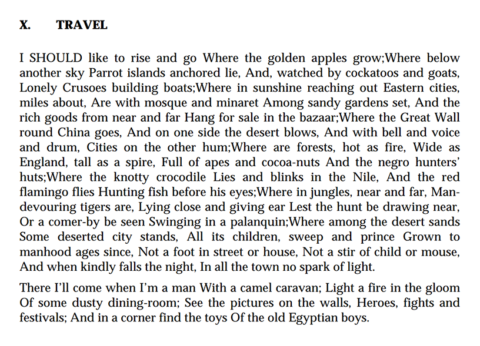
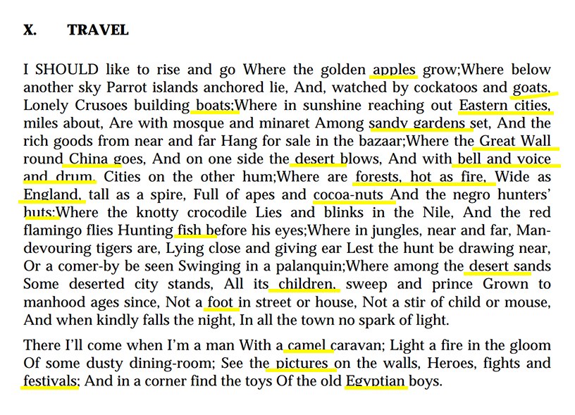

This text is from the travel poetry written by Robert Louis Stevenson. Highlight the every single places that emojis will represent these single items. My idea is referenced from Geo Goo's map patterns. It is pretty cool and interesting that using the emojis to represent the every single items.
 